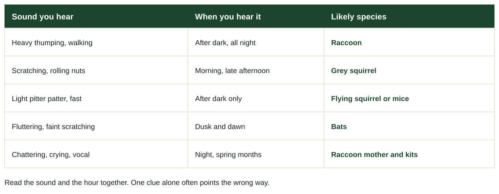

Problems
Wildlife Droppings, Guano and Health Risks
Droppings are how an attic problem becomes a health question. Most risks are manageable with distance, gloves and the right cleanup method, and a few are not DIY at all. This page keeps the facts plain: what each droppings type can carry, how exposure happens, and where the DIY line sits.
Request an inspection
Bat guano and histoplasmosis
Histoplasmosis is a lung infection caused by a fungus that grows in soil and in accumulated droppings, including bat guano. Exposure happens when dry guano is disturbed and spores are breathed in. A few droppings under a roost in a ventilated attic are a low-level housekeeping matter handled with gloves, a mask and damp collection. Deep guano built up over years under a colony is a different scale: it should be removed by professionals with respirators and HEPA equipment, and it should never be dry-swept or shovelled by a homeowner in a dust mask.
Most healthy people exposed to small amounts have no illness or a mild one. People with weakened immune systems face higher risk and should stay out of contaminated spaces entirely. This page cannot judge your personal risk. If you have symptoms after attic work, or you are in a higher-risk group and know guano is present, consult health professionals or your county health department and follow NYSDOH guidance. The house-side fix is certain either way: exclude the bats in the lawful season, then remove the accumulation properly.
- Never dry-sweep or dry-vacuum droppings
- Damp down material before any handling
- Deep accumulations are professional work
- Keep higher-risk people out of the space
Raccoon latrines and roundworm
Raccoons defecate in shared spots called latrines, on insulation, flat boards, roof decks and sometimes on the ground by a den. Their droppings can contain eggs of Baylisascaris, the raccoon roundworm. The eggs become infective after a few weeks in the environment and are hardy once there. Human infection is rare and serious, and it happens by ingesting eggs from contaminated hands, soil or objects, which is why children and pets need keeping away from latrine sites until they are cleaned.
Cleanup of a latrine means removing the droppings and the insulation or material directly beneath them, with gloves and care about dust and hand contact, then treating the surface as directed by current guidance. Do not compost, burn in a garden burner or tip latrine material into household waste in the open. An operator cleaning a latrine will bag material in place. If children play where a latrine was found outdoors, ask your county health department or health professionals what extra steps they advise.
Mice, rats and everyday droppings
Mouse and rat droppings are the most common attic finding and the least dramatic, handled with gloves, damp collection and hand washing. Their risks rise with volume and with urine contamination along runs, and they share the same golden rule as every droppings type here: never breathe the dust of dry droppings, and never use a household vacuum on them. Squirrel and opossum droppings sit in the same practical band: identify, photograph, remove carefully, treat the surface, and seal the entry point so the deposit stops growing. The species matters more for the removal plan than for the cleanup method.
Why this problem rarely fixes itself
Homeowners often wait a week or two, hoping the animal moves on. Sometimes a wandering male does leave. A denning mother, a bat colony or a squirrel with a stored food cache usually stays, and the damage grows while you wait: more droppings, more trampled insulation, more chewed material, and a stronger scent trail that draws other animals later. In upstate New York the October to March attic-entry push makes waiting riskier still, because a settled animal in autumn is planning to stay for winter. Early inspection costs little compared with cleanup after a full season of occupation.
What to do while you wait for help
Keep people and pets out of the attic and away from droppings. Do not block a hole you have spotted, because an animal trapped inside will chew a new way out, often through a ceiling or wall. Note the times you hear or see activity, and take phone photos of any entry point you can see safely from the ground. That short log helps an operator identify the species faster. Avoid handling any animal, live or dead, and wash hands after any contact with attic materials, tools or stored items from the space.
Droppings, risk and the safe response
| Source | Main concern | Safe response |
|---|---|---|
| Bat guano, deep piles | Histoplasmosis from disturbed dust | Professional removal, respirators, HEPA |
| Bat guano, few droppings | Low level with care | Gloves, mask, damp collection |
| Raccoon latrine | Baylisascaris roundworm eggs | Remove droppings plus material beneath, keep children and pets away |
| Mouse or rat droppings | Bacteria and urine contamination | Gloves, damp collection, seal entry points |
| Any droppings, unknown type | Treat as contaminated | Photograph, do not handle, book identification |
Frequently asked questions about droppings and health risks
Are rodent droppings actually dangerous?
They carry bacteria and sit in urine-contaminated runs, so they should always be handled as contaminated material: gloves on, damp collection, no dry sweeping, hands washed afterwards. For a small, fresh scatter the risk with those precautions is low. For a large, old accumulation, or where children could reach the area, professional cleanup is the safer call. Health questions beyond that belong with health professionals. For health questions, consult health professionals or your county health department and follow current NYSDOH guidance for your situation.
Can bat droppings make you sick?
They can, through histoplasmosis, when dry guano dust is breathed in. The risk scales with the amount and the disturbance: a few droppings differ from a deep pile under a long-used roost. That is why small amounts are a careful DIY task and deep guano is professional work with respirators. If you feel unwell after attic exposure, consult health professionals and mention the guano directly. This page gives general information only. Health professionals and your county health department are the right source for personal advice.
What does bat poop look like compared with mouse droppings?
They look similar at a glance: small dark pellets. The difference is texture. Bat guano crumbles into powder with shiny insect fragments when pressed with a gloved stick, because bats eat insects. Mouse droppings are hard, smooth and grain-like, and stay in one piece. Location helps too: guano piles under one roost point, while mouse droppings scatter along runs and wall edges. When health exposure is possible, check guidance first and act on that guidance rather than on general information from a website.
How do I clean raccoon droppings safely?
Treat a raccoon latrine as the highest-care cleanup on this page. Keep children and pets away. Droppings and the material directly under them need to come out, bagged in place, with gloves and dust care throughout, and hands and tools washed afterwards. Because of raccoon roundworm, most homeowners hand latrines to a professional crew. For any exposure worry, consult health professionals or your county health department for current guidance. For health questions, consult health professionals or your county health department and follow current NYSDOH guidance for your situation.
Should I remove contaminated insulation myself?
A small area of lightly affected insulation is within careful DIY reach for some homeowners. Latrine zones, urine-soaked sections and any insulation under a bat roost of size are professional work: the material is bulky, the dust load is real, and disposal needs bagging in place. The honest test is volume and source. If you are asking whether your attic qualifies as heavy, it usually does. This page gives general information only. Health professionals and your county health department are the right source for personal advice.
What diseases can bats spread besides rabies?
In the attic context, the practical concern is histoplasmosis from guano, covered on this page. Rabies is the other bat-associated risk and it travels by bite or direct contact, not through droppings or air in a house. That is why the bat-in-a-bedroom rule exists: contain the bat and check health guidance rather than releasing it. Beyond those two, bats in New York attics are more a building problem than a disease problem. When health exposure is possible, check guidance first and act on that guidance rather than on general information from a website.
Is it safe to store things in an attic that had droppings?
After cleanup and treatment, yes, with common sense. Items that sat in or under droppings should be cleaned or discarded, soft goods in contaminated zones are usually discarded, and sealed plastic boxes are a better store than cardboard, which animals nest in and moisture ruins. Keep storage away from the old roost or latrine zone where you can. The entry sealing matters most: a clean, sealed attic stays clean. For health questions, consult health professionals or your county health department and follow current NYSDOH guidance for your situation.
My child was in the attic where droppings are. What should I do?
Wash hands and any exposed skin, change and wash the clothes, and keep the child out of the attic until it is cleaned. Then take advice: health professionals or your county health department can judge the exposure by the droppings type and how long the child was there. Do not panic, and do not guess. A short call gives you the current guidance for exactly your situation, which a web page cannot. This page gives general information only. Health professionals and your county health department are the right source for personal advice.
How do I know if droppings are fresh or old?
Fresh droppings are dark, soft and sometimes shiny. Old ones dry, fade to grey-brown and harden or crumble. Fresh deposits mean an active animal and a live removal job. Old, dry droppings with silence in the attic may mean the animal has gone, which the operator confirms before sealing. The crumble test also helps with bats: guano dusts apart at any age, which separates it from mouse droppings in mixed attics. When health exposure is possible, check guidance first and act on that guidance rather than on general information from a website.
Do droppings attract other animals?
Yes. Scent is a housing advertisement in the animal world. A used den smells proven and safe, and latrine and urine scent pulls new tenants after the first one leaves. This is why cleanup follows exclusion in the job sequence and why a removal without cleanup and sealing so often repeats. Removing the deposit, treating the surface and closing the entry together break the advertisement at every point. For health questions, consult health professionals or your county health department and follow current NYSDOH guidance for your situation.
When is droppings cleanup a professional-only job?
When the source is a raccoon latrine, when bat guano is deep or widespread, when insulation is soaked across a wide area, or when anyone in the house is in a higher-risk health group. Also when the droppings sit somewhere you cannot reach safely. In those cases the cost of professional cleanup buys equipment and method, respirators, HEPA filtration and bagging in place, that household tools cannot stand in for. This page gives general information only. Health professionals and your county health department are the right source for personal advice.
Request an inspection
Tell us the town, the animal or noise involved, and when it started. An operator covering your town will explain the inspection, the likely next steps and the typical ranges before any work is booked.
Placeholder: call-tracking phone number and form endpoint are added before launch. No phone number is shown or invented in this draft.